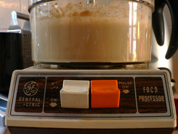

A food processor!
It wasn’t until the giant party that Mom and I threw at the end of 2006 that I realized what a wonderful thing the food processor is. I knew I wanted one eventually, and I had a crappy one years ago (a Cuisinart combo blender/processor—a very bad appliance) that conked out after a dozen uses. But after shaving so much time off of every task we completed for that ridiculous boum, and after realizing that many of things we made simply wouldn’t have been practical without it, I mentally sacrificed the counter space before I even came back to New York. (As Mom said in an email almost a year ago, You should just get yourself a Cuisinart; I don’t know how you live without one, anyway. Jettison something else to make room for it. I could more easily give up my toaster.)
Emily Lyons saved the day last week, allowing me to adopt this gorgeous old non-Cuisinart powerhouse that’s no doubt older than I am.

But it’s much stronger and faster than I’ll ever be. I made a respectable hummus on Saturday afternoon in twenty minutes, and most of that time was spent toasting and grinding cumin. I chopped fistfuls of carrots, celery, onions, and garlic tonight for a big batch of marinara. Chopping more than one carrot used to be a real chore; now it takes thirty seconds.
The machine is as loud as a garbage truck, but unlike the Cuisinart I had, it doesn’t make the apartment smell of burning fuel, and the unit (which is surprisingly light) doesn’t even get hot.
Comments
pulse pulse pulse. processors are the best.
What’s a “boum”? And what language is it?!
Boum is the word I learned in middle school French class to say party, and it caused much embarassment when I finally went to France and realized that old ladies have boums and young people have teufs.
Damn, I always thought it was “boume.”
And that smell was ozone. (The gas, not the Moldovan singers of Dragostea din tei. Which we would frequestly play at our boums.)
So if I had a boum I must be an old lady; I get it!
Glad my food processor is working out! Can you post a good recipe for hummus?
I got the exact same food processor via freecycle a year or two ago. I posted a pic, I raved, etc, etc.
Bittman’s recipe for hummus is pretty nice. I think I half the tahini and oil. And double the peas, which would, effectively, quarter the tahini and oil. But its nice full strength too, depending on your needs.
Add a comment